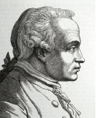

“İki şey, üzerlerine yoğun bir biçimde ve sık sık düşünülürse, insan zihnini hep yeni, hep artan bir hayranlık ve korkunç bir saygıyla dolduruyor: Üzerimdeki yıldızlı gök ve içimdeki ahlak yasası.”
- Pratik Aklın Eleştirisi

Immanuel Kant (1724-1804), o zamanlar Prusya’nın bir parçası olan Königsberg’te doğdu. Tüm hayatını, doğduğu şehirden hiçbir zaman uzaklaşmadan, orada geçirdi. Hayvan koşumları üreticisinin oğlu olan Kant, Königsberg Üniversitesi’nde profesörlüğe kadar yükseldi ve sonunda Almanya’nın en büyük filozofu olarak kabul gördü.
Orta yaşlarında Kant, henüz halkın dikkatini çekecek herhangi bir şey başarmamıştı. Sonra görece geç bir zamanda, elli yedi yaşında, tek en ünlü eseri Saf Aklın Eleştirisi’ni (1781) yayınladı. Bu ilk eleştirisinde bilindiği gibi Kant, metafiziğin sadece dünyanın kendinde nasıl olduğunu değil, aynı zamanda bizim onu nasıl deneyimlediğimizi de tarif ettiğimizde bilimsel olabileceğini savundu. Dünyanın kendinde nasıl olduğunu hiçbir zaman bilemeyeceğimizi ileri sürdü. Örneğin, uzay ve zaman dünyanın kendinde olan nesnel özellikleri değil, bizim deneyimimizin formlarıdır.
İkinci eleştirisi Pratik Aklın Eleştirisi (1788) eserinde Kant, herkes için geçerli olan ve ne istediğimiz ne olursa olsun, ne yapmamız gerektiğini bize söyleyen evrensel bir ahlâk yasası olduğunu savundu. Bu yasa, özgür irademiz olduğunu bize gösterir ve iyiliksever bir Tanrı’nın ve ölümden sonra yaşamın olduğuna inanmak için bize gerekçe verir. Elbette ilk eleştiri özgür olduğumuzu, Tanrı’nın olduğunu veya ölümden sonra yaşam olduğunu hiçbir zaman bilemeyeceğimizi gösterir. Bu nedenle Kant’ın sözleriyle “İnanca yer açmak için bilgiyi askıya almam gerekir.”
Kant’ın diğer eserleri, Yargı Gücünün Eleştirisi (1790) ahlâk ve siyaset felsefesi, din, estetik, tarih ve fen bilimleri üzerinde bir dizi kısa eser ve makaleyi içerir. Adlandırdığı şekilde “eleştirel” sistem, insanoğlunun gerçekten emin olabileceklerinin üzerinde sınırlamalar koyarken fen bilimlerini, ahlâk ve dini akla uygun biçimde haklı gerekçelendirmeyi hedef-
lemektedir.
EK BİLGİLER:
1. Kant en çok bir filozof olarak bilinmesine rağmen, neredeyse her konu üzerine (pedagoji, mantık, matematik, fen bilimleri ve coğrafya) ders verdi; fizik ve fen bilimlerinde çeşitli önemli eserler yayınladı.
2. Söylendiğine göre Kant’ın alışkanlıkları o kadar düzenliydi ki Königsberg’in vatandaşları saatlerini onun yürüyüşlerine göre ayarlayabiliyorlardı.